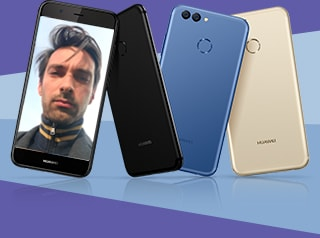
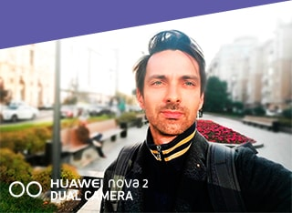
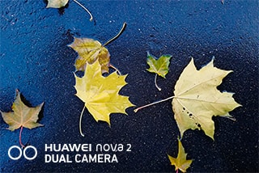
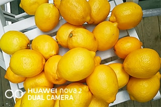
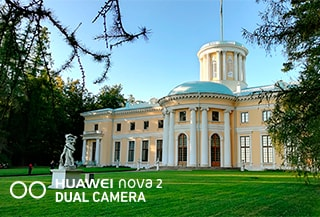
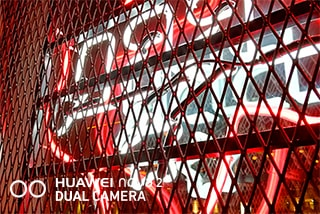
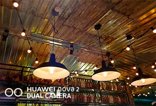
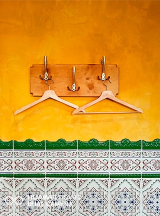
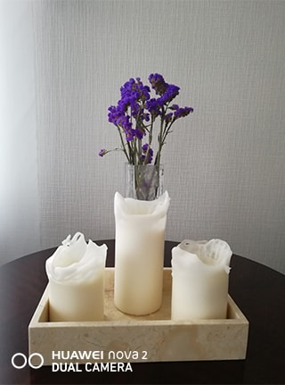
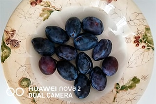

Стоп! Снято

Послужному списку фотографа Антона Земляного могут позавидовать многие коллеги по цеху: съемки для ведущих глянцевых изданий, рекламные кампании, успешные онлайн-проекты, работа со звездами кино и моды. Антон долгое время жил в Австралии, но нам удалось застать его в Москве, чтобы поговорить о профессиональной съемке и любительской — на новый смартфон Huawei nova 2.

— Антон, журналисты перед интервью обычно штурмуют интернет, собирая досье на героя, а как вы готовитесь к фотосессиям?
Знаете, я недавно понял, что любая съемка, если это не фотожурналистика или документальное кино, по сути автопортрет фотографа. Когда я снимаю кого-то, будь то Константин Хабенский или Вера Брежнева, невольно передаю в кадре свое восприятие мужчин и женщин, мира и даже жизненный опыт. Конечно, иногда я читаю интервью, смотрю какие-то видео, но, если честно, мне нравится знать, как можно меньше, ведь тогда я могу концентрироваться на самом человеке, его сути, а не на последних новостях о нем или событиях, с ним связанных.

— Вы часто снимаете знаменитостей, чем интересны такие съемки?
Это всегда отличная возможность поработать с людьми, которые многого достигли, построили хорошую карьеру, а значит, обладают должной дисциплиной, мотивацией, силой воли. Жаль только, что на съемках редко удается поговорить, время пролетает.

— В каких случаях вы чаще всего фотографируете на телефон?
Смартфон у меня всегда под рукой, поэтому, в основном, я на него и фотографирую. Давно не ношу профессиональную технику с собой и не беру рабочий рюкзак — он может весить до 18 кг — в путешествия. В поездках стремлюсь запечатлеть окружающую меня красоту и двигаться дальше.

— Какое фото из последних для вас стало самым ценным?
На мой прошлый день рождения в Москве собрались друзья из Австралии, Швеции, приехал мой брат. Такое редко бывает, чтобы все любимые люди и в одном месте. Снимки, которые мы сделали тогда, во время нашей прогулки, значат для меня очень много.

— Любите селфи?
Мне больше нравится быть по другую сторону объектива. Но в случае, если фронтальная камера дает хорошее качество, почему нет? В Huawei nova 2 она 20 МП, а это обещает вполне достойный результат.

— Вам впервые предложили протестировать смартфон? Какие ощущения, когда снимаете не на свой?
Нет, не впервые, и ощущения всегда необычные, ведь невольно начинаешь сравнивать. Мне понравилось, что телефон очень легкий и компактный. Удобный режим селфи, хотя для того, чтобы освоить все многочисленные функции Huawei nova2, требуется время — я бы еще попробовал разные настройки и посмотрел, как гаджет работает в разных условиях.

— Какие режимы на Huawei nova2 понравились?
Скажу так, интересными показались режимы обработки портретных фотографий с учетом расположения частей лица, фактуры кожи и даже пола человека в кадре. Конечно, это не профессиональная ретушь, но любителям Instagram жизнь, определенно, облегчит. Есть необычный профессиональный режим с эффектом боке, который сегодня на волне — в фокусе человек, а фон позади него красиво размыт. Удаленные объекты позволяет снимать телеобъектив — да, он всего 8 МП, но все же в определенных ситуациях, когда камеры нет рядом, приятно знать, что такая возможность есть.

— А снимать при разном освещении попробовали?
Да, камера работает в ночное время, на закате, во время вечеринок. При недостаточном освещении можно включить подсветку экрана — в меню для этого есть 11 вариантов цветовых температур.

— Что вы можете сказать о дизайне?
Смартфон действительно легкий — для меня это главное. Кроме того, он тонкий, лаконичный и его приятно держать в руке.